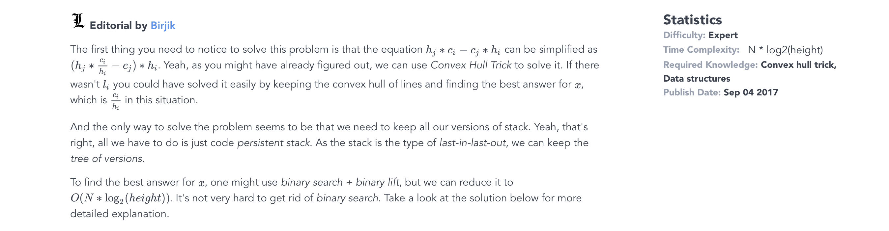

Sorry for spoilers by the way. But that was a good clickbait, right? ;)
Okay, you can find the problem by clicking this link.
I submitted this problem to HackerRank with the help of my friend, Birzhan. As I was 17 at that time, I couldn't legally "work" for HackerRank.
Basically, the problem asks you to code a persistent Convex Hull Trick to answer queries of type of online. To achieve that, you need to program persistent stack with some data structure on tree to find K-th vertex on a path.
Sounds so cool and beautiful, right? Nothing can compare to my sheer exuberance when I came up with this problem!
Solution

P.S. You can more detailed solution there. In the meantime, enjoy the photo that I took myself at Shymbulak. Google it, if you want know to where it is.